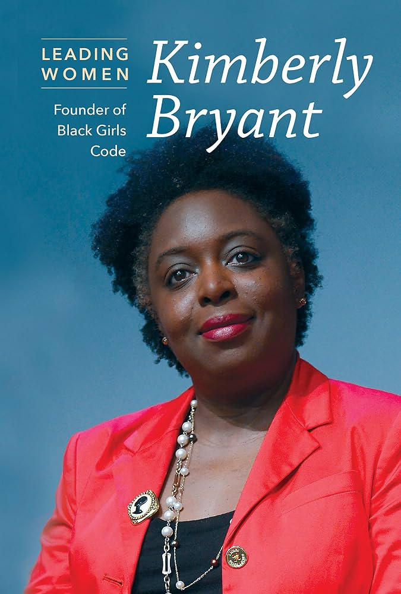

Tech Heroes
Kimberly Bryant

Kimberly Bryant is an African-American women from Memphis, Tennessee where she was raised by a single mother. She then attended Vanderbilt University, where she chose to study electrical engineering. It was here she realized how few other students looked like her. In 2011, after working as an engineer for over 20 years, Bryant founded Black Girls Code. This orginazation started out as a small workshop for girls aged between 6 and 13, however, it quickly grew into a huge program that was introducing girls, aged 7 to 17, to topics like robotics, game design, app development, and programming. As the orginazation has expanded from San Francisco, to chapters around the nation, Bryant has also turned down money from orgazations that did not align with her values. For example, she turned down over $100,000 from Uber, after a huge sexual assault scandal happened at the company. Bryant's work is something that struck very close to home for me, as when I was younger I was lucky enough to be introduced to code by my parents. However, I know there are many people that will not be introduced to these topics by their parents or people around them. That's why a program like Black Girls Code, that brings these topics to people that otherwise would never learn about them, is something that is very special to me.